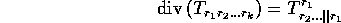
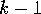
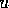
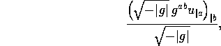
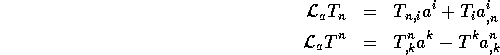
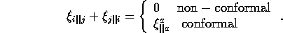
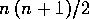
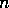
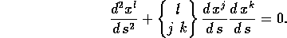

In addition to those functions listed above that calculate from a metric commonly used tensors, there are a number of other computations in GR that are conveniently packaged as functions. These compute the divergence of a tensor, the D'Alembertian of a scalar, Lie derivatives, the Killing equations, and the geodesic equations. These functions either operate on another object or produce output which is not usually regarded as a tensor, so they are not grouped with the functions above that compute the family members of a metric.
The divergence function div() computes the divergence of its first argument via the formula:

and note that the first index will be raised if need be (however, this will be done to the covariant derivative, not to the parent object, see §4.2.1). The output is an object of rank , with either the optional second argument as its name, or a default name of the form <input>_D. The divergence of a vector quantity is an indexed scalar. The name of the divergence object is stored on the property list of the input object under the key div, and div() will immediately return this name if the divergence has already been computed. The symmetries of the output will be those that survive the loss of the first index of the parent object.
The function dalembert() computes the D'Alembertian of a scalar  from the equation

and the output of this function is also a (non-indexed) scalar. The determinant function det() (described below) is used to compute the determinant of the metric tensor.
lie()
The function lie() computes the Lie derivative of its first
argument in the direction of the vector that is the second argument.
The output object (whose name is formed by concatenating the name of
the tensor and vector and adding _lie to the end ) has the same index
structure as the input object. If the vector given is covariant it
will be shifted to give a contravariant representation.
The formula used is
) has the same index
structure as the input object. If the vector given is covariant it
will be shifted to give a contravariant representation.
The formula used is

which is expanded as required to cover each of the objects' indices.
The function killing() computes the Killing equations for the current-metric; this function cannot, however, solve these equations for the Killing vectors. The Killing equations are given by

The output of this object is a rank-2 symmetric tensor whose name will be the first argument to killing() (there is no default name). The optional second argument, if non-nil, indicates that the conformal Killing equations are to be computed. The Killing vector is, by default, given the name k (the default name is stored on killing), it is created as an implicit covariant vector that depends on all the coordinates. The components of the output object are then a set of  first order differential equations that are to be solved for the components of k, where  is the dimension of the space.
It should be noted that computing the Killing equations for the RW metric as set up in the examples above will cause difficulties, since the Killing vector k will be made to depend on the coordinates but in the RW metric k is a constant. Any subsequent computation involving differentiation will be incorrect, since the dependencies for an indexed object are created and stored in the same fashion as those for non-indexed objects. This may be fixed in future, but involves rewritting some REDUCE code. If the switch mkobjsafe is on, then mkobj() called from killing() will err-out when it attempts to create the Killing vector for this metric.
In a similar fashion, geodesic() computes the geodesic equations from

The first argument is the name of the output object, which will be a covariant vector. The optional second argument is the name of the affine parameter, the default (stored on geodesic) is geodesic s. Each of the coordinate names (in coords!*) is made to depend on the affine parameter.
Another occasionally useful function is mkcoords(), which makes a contravariant coordinate vector of its single argument, or of the default name which is the value of mkcoords[x]. The coords() function calls mkcoords() whenever the user changes the coordinates so that the vector x always contains the current coordinates.